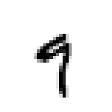
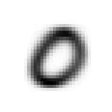
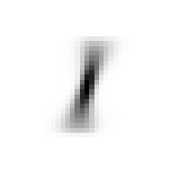
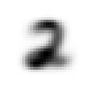
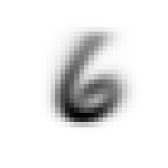
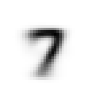
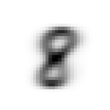

from fastai.vision.all import *
from fastbook import *
matplotlib.rc('image', cmap='Greys')Hi! This is my attempt to do the “Futher Research” part of the FastAI Fastbook Chapter 4 which I recreate using full MNIST datasets and heavily inspired by this blog
This is intended to be a learning exercise to slowly learn PyTorch and the FastAI library.
Part 1: Pixel Similarity
In this recreation, we are using full MNIST dataset consisting from 0-9 handwriting letter
We first “download” the full MNIST dataset and list all the train and validation path
mnist_path = untar_data(URLs.MNIST)
train_path = (mnist_path/'training').ls()
valid_path = (mnist_path/'testing').ls()We then create a dictionary where the value is the tensor of each image and we create the stacked tensor dictionary where the value is stacked tensor of all images for each digits
tensors_train = {}
for digit in train_path:
tensors_train[digit.name] = [tensor(Image.open(picture)) for picture in digit.ls()]stacked_tensors_train = {}
for digit_tensor in tensors_train.keys():
stacked_tensors_train[digit_tensor] = torch.stack(tensors_train[digit_tensor]).float()/255By selecting which keys and calculate the mean by selecting the first dimension (0), we are able to see the average images of each class.
mean9 = stacked_tensors_train['9'].mean(0)
show_image(mean9)
Let us see the distance between one of the 9 and the average 9
a_9 = stacked_tensors_train['9'][0]
show_image(a_9)
dist_9_abs = (a_9 - mean9).abs().mean()
dist_9_sqr = ((a_9 - mean9)**2).mean().sqrt()
dist_9_abs, dist_9_sqr(tensor(0.1066), tensor(0.2059))mean0 = stacked_tensors_train['0'].mean(0)
dist_0_abs = (a_9 - mean0).abs().mean()
dist_0_sqr = ((a_9 - mean0)**2).mean().sqrt()
dist_0_abs, dist_0_sqr(tensor(0.1844), tensor(0.3134))From the calculation we can see that the distance between 9 and the “mean” 9 is less than the distance between 9 and the “mean” 0. By using this distance difference we can classify the digits.
This can be calculated using pytorch F class that have similar result
print(F.l1_loss(a_9, mean9), F.mse_loss(a_9, mean9).sqrt())
print(F.l1_loss(a_9, mean0), F.mse_loss(a_9, mean0).sqrt())tensor(0.1066) tensor(0.2059)
tensor(0.1844) tensor(0.3134)tensors_valid = {}
for digit in valid_path:
tensors_valid[digit.name] = [tensor(Image.open(picture)) for picture in digit.ls()]
stacked_tensors_valid = {}
for digit_tensor in tensors_valid.keys():
stacked_tensors_valid[digit_tensor] = torch.stack(tensors_valid[digit_tensor]).float()/255Now instead calculate the mean for each digits
model_mean = {}
for digit_tensor in stacked_tensors_valid.keys():
model_mean[digit_tensor] = stacked_tensors_train[digit_tensor].mean(0)
for digit_mean in model_mean.keys():
show_image(model_mean[digit_mean])





def mnist_distance(test_image,mean_image):
return (test_image-mean_image).abs().mean((-1,-2))print(stacked_tensors_valid['0'].shape, model_mean['0'].shape)
valid_dist = mnist_distance(stacked_tensors_valid['0'], model_mean['0'])
valid_dist.shapetorch.Size([980, 28, 28]) torch.Size([28, 28])torch.Size([980])mnist_distance will calculate the distance each stack of stack_tensors_valid[‘0’] with model mean of ‘0’ with resulted a torch size equal to the number of stack of stack_tensor_valid
valid_dist = torch.stack([mnist_distance(stacked_tensors_valid['0'], model_mean[o]) for o in model_mean.keys()])
valid_dist, valid_dist.shape(tensor([[0.1298, 0.1337, 0.1540, ..., 0.1307, 0.1248, 0.1627],
[0.1822, 0.1556, 0.1623, ..., 0.2321, 0.2238, 0.2341],
[0.1781, 0.1580, 0.1730, ..., 0.2318, 0.2206, 0.2314],
...,
[0.1946, 0.1567, 0.1768, ..., 0.2283, 0.2128, 0.2416],
[0.1775, 0.1466, 0.1838, ..., 0.2144, 0.1954, 0.2101],
[0.1976, 0.1463, 0.1867, ..., 0.2235, 0.2095, 0.2265]]),
torch.Size([10, 980]))From there we improve so that it calculate the distance to each digit of model mean and stack it.
min_values, min_indices = torch.min(valid_dist, dim=0)
is_correct = min_indices == int(list(model_mean.keys())[0])
accuracy_each = is_correct.float().mean()
accuracy_eachtensor(0.8153)We can then calculate the accuracy by:
- On valid_dist stack_tensor we find the index of minimum value
- We then check if the minimum indices is the same as the correct digit
- calculate the accuracy by calculating the mean of the is_correct bollean list
def calc_acc(an_image_tensor, keys):
valid_dist = torch.stack([mnist_distance(an_image_tensor, model_mean[o]) for o in model_mean.keys()])
min_values, min_indices = torch.min(valid_dist, dim=0)
is_correct = min_indices == int(list(model_mean.keys())[int(keys)])
accuracy = is_correct.float().mean()
return accuracy
acc = torch.stack([calc_acc(stacked_tensors_valid[keys], keys) for keys in stacked_tensors_valid.keys()])
acc.mean()tensor(0.6610)Combine everything in calc_acc, and instead of only calculating the accuracy for one digit, we calculate for every digit and find the mean. The mean will be our model’s accuracy.
Part 2: Learner
Now we want to improve the model accuracy by using regression model
For the data preparation, instead of using dictionary, we create a list of pair where the first dimension is x_data and second dimension is y_data
train_path = (mnist_path/'training').ls()
valid_path = (mnist_path/'testing').ls()tensors_train = [(tensor(Image.open(each_image)), int(digit_file.name)) for digit_file in train_path for each_image in digit_file.ls()]
tensors_valid = [(tensor(Image.open(each_image)), int(digit_file.name)) for digit_file in valid_path for each_image in digit_file.ls()]
np.random.shuffle(tensors_train)
np.random.shuffle(tensors_valid)So what tensors_train contain is:
- tensors is list with 60.000 element
- tensors[] is tuple with 2 elements
- tensors[][0] is tensor of images value 28x28
- tensors[][1] is the label
print(len(tensors_train))
print(len(tensors_train[0]))
print(len(tensors_train[0][0]))
print(tensors_train[0][1])
print(len(tensors_valid))60000
2
28
5
10000train_x = torch.cat([tensors_train[each_stack][0].view(-1, 784).float()/255 for each_stack in range(len(tensors_train))])
train_y = tensor([tensors_train[each_stack][1] for each_stack in range(len(tensors_train))])
valid_x = torch.cat([tensors_valid[each_stack][0].view(-1, 784).float()/255 for each_stack in range(len(tensors_valid))])
valid_y = tensor([tensors_valid[each_stack][1] for each_stack in range(len(tensors_valid))])train_ and valid_ structure:
- train_ is tensor with 48.000 stack of 784 tensor of flattened image (28x28)
- valid_ is tensor with len 48.000 which are the class label of each train_ stack
print(train_x.shape)
print(train_y.shape)
print(valid_x.shape)
print(valid_y.shape)torch.Size([60000, 784])
torch.Size([60000])
torch.Size([10000, 784])
torch.Size([10000])dset_train = list(zip(train_x, train_y))
dset_valid = list(zip(valid_x, valid_y))dset and valid_dset is pair of data and label:
- dset is length of 48.000 data
- dset[] is each pair
- dset[][0] is the x and dset[][1] is the y
print(len(dset_train))
print(len(dset_train[0]))
print(len(dset_train[0][0]))
print(dset_train[0][0].shape)
print(dset_train[0][1].shape)60000
2
784
torch.Size([784])
torch.Size([])print(len(dset_valid))
print(len(dset_valid[0]))
print(len(dset_valid[0][0]))
print(dset_valid[0][1])10000
2
784
tensor(7)Create function to initialize parameter that give output a tensor with desired size
def init_params(size, std=1.0): return (torch.randn(size) * std).requires_grad_()weights = init_params(((28*28), 10))
bias = init_params((1, 10))Because this one is a linear type classifier, we need to have 10 stack of weights for each digits. It is different from neural networks based where we used 1 set of weights
print(train_x[0].shape, "-> its equal to [1, 784]")
print(weights.shape)
pred = train_x[0]@weights + bias
print(pred)
print(pred.shape)torch.Size([784]) -> its equal to [1, 784]
torch.Size([784, 10])
tensor([[-12.8129, 15.3278, 4.1641, 1.6066, 4.2265, 11.4496, 19.4137, 2.0250, 25.2653, -6.6110]], grad_fn=<AddBackward0>)
torch.Size([1, 10])This doenst quiet represent anything yet. We need to use softmax to convert the output to probabilities.
def linear1(x_matrix): return x_matrix@weights + bias
pred = linear1(train_x)
pred_prob = F.softmax(pred, dim=1)
print(pred_prob)
print(pred_prob.shape)tensor([[2.8946e-17, 4.8186e-05, 6.8328e-10, ..., 8.0465e-11, 9.9708e-01, 1.4290e-14],
[1.5549e-08, 1.6647e-08, 4.7936e-06, ..., 2.1437e-15, 1.4793e-04, 1.3994e-09],
[8.0650e-07, 3.7267e-06, 1.1988e-05, ..., 1.3478e-02, 5.2920e-04, 3.1845e-03],
...,
[6.0731e-07, 4.7170e-01, 2.7054e-08, ..., 2.0115e-10, 4.8844e-01, 3.8189e-02],
[9.2131e-01, 1.5331e-07, 3.5232e-07, ..., 2.0329e-11, 1.8150e-04, 1.7378e-14],
[6.7177e-07, 3.1652e-04, 1.0417e-06, ..., 4.6246e-02, 3.6580e-07, 4.9520e-09]], grad_fn=<SoftmaxBackward0>)
torch.Size([60000, 10])pred_prob store probability of each image for all digits.
Then we try to calculate the accuracy
acc = tensor([torch.argmax(pred_prob[i]) == train_y[i] for i in range(len(pred_prob))])
acc.float().mean()tensor(0.0683)What it acc did:
- For every stack of pred_prob tensor, it find the index of the highest probability and return the index.
- After finding the index it do bollean check to see if the index is equal to the actual label.
- We then calculate the mean to see the accuracy
Lets try to update the weight to see if there is any significant change
weights[0]tensor([ 1.1152, 0.6064, 0.9859, 1.4940, 1.9783, 0.3804, 0.0418, 0.2844, -0.3880, -0.7500], grad_fn=<SelectBackward0>)with torch.no_grad(): weights[0] *= 1.0001
pred = linear1(train_x)
pred_prob = F.softmax(pred, dim=1)
acc = tensor([torch.argmax(pred_prob[i]) == train_y[i] for i in range(len(pred_prob))])
acc.float().mean()tensor(0.0683)As you can see the accuracy didnt change visibly. This means that we need to find better metrics to evaluate our model.
Because the change in weight SHOULD BE change how our model works (for better or worse)
We will use what we call a binary cross entory loss (I will make other post on that later, for now please look for your own reference)
def mnist_loss(predictions, targets):
loss = F.cross_entropy(predictions, targets.squeeze())
return lossloss = mnist_loss(pred, train_y)
print(loss)
loss.backward()
weights.grad.shape,weights.grad.mean(),bias.grad.shapetensor(14.6460, grad_fn=<NllLossBackward0>)(torch.Size([784, 10]), tensor(-1.5205e-10), torch.Size([1, 10]))Here we can have gradient for each weight of each pixel (therefore we have torch.Size([784, 10])
def calc_grad(x_data, y_data, model):
preds = model(x_data)
loss = mnist_loss(preds, y_data)
loss.backward()
calc_grad(train_x, train_y, linear1)
weights.grad.mean()tensor(-3.0411e-10)print(train_x.shape)
print(train_y.shape)torch.Size([60000, 784])
torch.Size([60000])For every epoch, we need to set the gradient into zero to make sure it didnt add onto existing gradient (as it do in in default)
train_batches = DataLoader(dset_train, batch_size=256)
valid_batches = DataLoader(dset_valid, batch_size=256)
xb,yb = first(train_batches)print(len(train_batches))
print(xb.shape)
print(yb.shape)235
torch.Size([256, 784])
torch.Size([256])So what dataloader do is to create a batch of x and y data from the dset_ dataset (thats why it has 60.000 / 256 = 235 len)
def train_epoch(model, learn_rate, params):
for x_data, y_data in train_batches:
calc_grad(x_data, y_data, model)
for p in params:
p.data -= p.grad*lr
p.grad.zero_()What it did is for each epoch it learn update the params (in this case is weights AND bias thats why its done in loop) based on the gradients that calculated in each loop train dataset
def batch_accuracy(x_data, y_data):
preds = F.softmax(x_data, dim=1)
correct = torch.argmax(preds, dim=1) == y_data
return correct.float().mean()We still need to use accuracy to measure the final performance after adjustment
batch_accuracy(linear1(train_x), train_y)tensor(0.0683)def validate_epoch(model):
accs = [batch_accuracy(model(xb), yb) for xb,yb in valid_batches]
return round(torch.stack(accs).mean().item(), 4)
validate_epoch(linear1)0.0753The accuracy is used to validate each epoch
lr = 1.
params = weights,bias
train_epoch(linear1, lr, params)
validate_epoch(linear1)0.8472From just one epoch we can get the 84% accuracy
Now lets try to train 20 epoch
for i in range(20):
train_epoch(linear1, lr, params)
print(validate_epoch(linear1), end=' ')0.8754 0.8839 0.8918 0.8982 0.9018 0.9041 0.9056 0.9065 0.9085 0.9093 0.9112 0.9131 0.9138 0.9144 0.9141 0.9137 0.9142 0.9142 0.9144 0.9145 Here we go, just using very2 basic linear regression model we can have 91% accuracy.
The next iteration of model using neural network will be done on another post.
Please kindly submit your comments and suggestions to my email address: fahmi.rizaldi@gmail.com